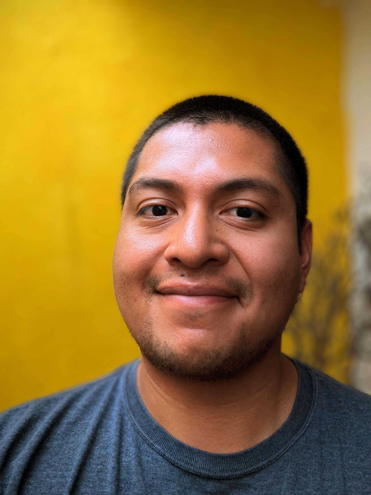

Dr. Fernan R. Pérez-Gálvez
Investigador, docente en agrobiotecnología y control genético de plagas
TED-Ed: ¿De verdad necesitamos pesticidas?
ResearchGate
LinkedIn
GitHub
CV Español
CV English
E-mail